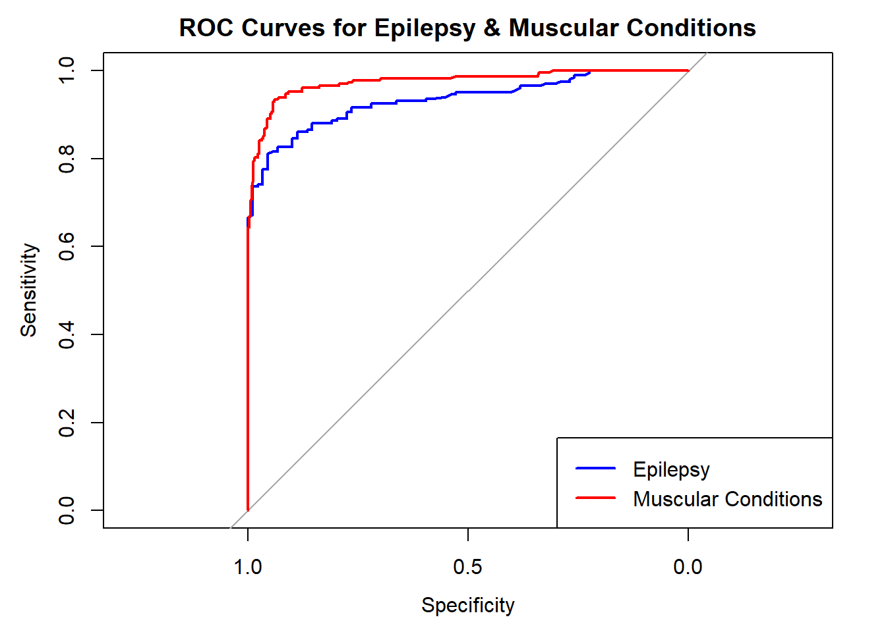

PM-272 Assignment 2: Using Machine Learning to Predict the Pathogenic Outcomes of Genetic Mutations for Epilepsy and Muscular Condition Phenotypes
Author
Harley Burrow (2318180)
Introduction to the Datasets
Dataset 1 - Humvar
This dataset describes the aspects of 36,684 genetic variants and whether their presence results in a benign or pathogenic outcome for health. It will be used to train the machine learning (ML) model which will then be able to specifically predict the likelihood of genetic variants causing epilepsy and muscular conditions.
Dataset 2 - Lab Variants
This shows a list of mutations (including mutation ID) and whether they cause epilepsy or muscular conditions. It will be used to match these same mutation IDs on the third dataset with their corresponding variant benignity predictors.
Dataset 3 - Variants Annotated
This shows the variant benignity predictors for each mutation ID. It will be merged with the Lab Variants dataset to run the ML model that will predict whether each mutation ID and their predictors will be likely to result in a benign or pathogenic epilepsy/muscular condition phenotype.
── Conflicts ────────────────────────────────────────── tidyverse_conflicts() ──
✖ dplyr::combine() masks randomForest::combine()
✖ dplyr::filter() masks stats::filter()
✖ dplyr::lag() masks stats::lag()
✖ ggplot2::margin() masks randomForest::margin()
ℹ Use the conflicted package (<http://conflicted.r-lib.org/>) to force all conflicts to become errors
library(pROC)
Warning: package 'pROC' was built under R version 4.4.2
Type 'citation("pROC")' for a citation.
Attaching package: 'pROC'
The following objects are masked from 'package:stats':
cov, smooth, var
randomForest
I loaded in the “randomForest” library so I could run the random forest algorithms to train the ML model and make predictions.
tidyverse
I loaded in the “tidyverse” library to help me transform and present data.
pROC
I loaded in the “pROC” library so I could produce the receiver operating characteristic (ROC) curve.
humvar_shuffled <- db.1[sample(1:nrow(db.1)),] # Shuffle the data set so it's random and unbiasedhumvar_bound <-nrow(humvar_shuffled) *0.75# select 75% of the datahumvar_train <- humvar_shuffled[1:humvar_bound,] # Assign first 75% of rows for traininghumvar_test <- humvar_shuffled[(humvar_bound+1):nrow(humvar_shuffled),] # Assign remaining 25% of rows to the test set
“summary(is.na(db.1))” checks the Humvar dataset for any missing data that may have to be removed/completed. Fortunately there was no missing data so no further completion was required.
I then shuffled the dataset using the sample() function. I did this because it made sure to eliminate any bias that might have arisen from the order that the genetic variants had been listed.
Using “nrow(humvar_shuffled) * 0.75” I selected 75% of the rows in the shuffled training data. I then assigned this 75% to the training set (“humvar_train <- humvar_shuffled[1:humvar_bound,]”), and the remaining 25% to the test set (“humvar_test <- humvar_shuffled[(humvar_bound+1):nrow(humvar_shuffled),]”).
Using a 75:25 ratio for the training and testing sets was important because having a higher amount of data to train the ML model means it will be more accurate, but I also needed enough data in the test set to ensure the accuracy, and true positive and false positive rates were accurate enough to the true rates.
Train the Random Forest Model
humvar_train_rf <-randomForest(as.factor(labels) ~ ., data = humvar_train) # Run the random forest to train the ML modelhumvar_train_rf # Output the results of the random forest
Call:
randomForest(formula = as.factor(labels) ~ ., data = humvar_train)
Type of random forest: classification
Number of trees: 500
No. of variables tried at each split: 6
OOB estimate of error rate: 6.33%
Confusion matrix:
Benign Pathogenic class.error
Benign 18036 1031 0.05407248
Pathogenic 806 9140 0.08103760
The as.factor() function tells the randomForest that “labels” is categorical data (data that can take one of a certain number of categories) and not continuous data. This was important to make sure the random forest was classification based rather than regression based. I used random forest as it runs many decision trees, meaning it will be highly accurate and will plot a more accurate ROC curve later.
The OOB estimate of error rate represents the percentage of the predictions made on out-of-bag samples (the third of the data not used in each decision tree) that were incorrect. The class errors depict the proportion of benign and pathogenic labels that were incorrectly predicted
Make the Humvar Prediction, and Find Accuracy, True Positive Rate and False Positive Rate
humvar_pred <-predict(humvar_train_rf, humvar_test) # Make the prediction on the test set using the trained ML modelhead(humvar_pred) # View the first six results of the prediction
Creating a confusion matrix and saving it as an object meant that I could calculate the accuracy, true positive rate and false positive rate for the model based on the coordinates of the test data’s confusion matrix which made coding the calculations quicker.
The top label of the confusion matrix shows what label the model predicted, and the left-hand label of the confusion matrix shows the true label. As such…
[1,1] = True negative/TN
[2,2] = True positive/TP
[1,2] = False positive/FP
[2,1] = False negative/FN
Accuracy = (TN + TP) / (TN + TP + FN + FP) = % of variants’ pathogenic outcome that were predicted correctly
True positive rate = (TP) / (TP + FN) = % of pathogenic variants that were labelled as pathogenic
False positive rate = (FP) / (FP + TN) = % of benign variants that were labelled as pathogenic
There was some missing data, but only in 25 rows out of 857 (2.91%) and only in the GenoCanyon_score column. Because there was such little data missing, I decided to simply remove the rows with missing data rather than using a multiple imputation method such as MICE as the missing data would not skew the results.
epilepsy_no_na <- pheno_patho_joined %>%filter(phenotype =="epilepsy") %>%# Filter the table so it only shows epilepsy phenotypesna.omit() # Remove rows with missing datamuscular_no_na <- pheno_patho_joined %>%filter(phenotype =="muscular_conditions") %>%# Filter the table so it only shows muscular condition phenotypesna.omit() # Removes rows with missing data
I filtered the overall joined table to make two new separate ones with just epilepsy and just muscular conditions because it would mean I could run their own random forest models and compare the results.
Create Shuffled Epilepsy and Muscular Conditions Sets and Run the Predictions
epilepsy_shuffled <- epilepsy_no_na[sample(1:nrow(epilepsy_no_na)),] # Shuffles the data sets so it's random and unbiasedmuscular_shuffled <- muscular_no_na[sample(1:nrow(muscular_no_na)),]epilepsy_pred <-predict(humvar_train_rf, epilepsy_shuffled) # Make predictions on the labels of the epilepsy and muscular condition sets based# on the trained random forest modelmuscular_pred <-predict(humvar_train_rf, muscular_shuffled)epilepsy_cm <-table(epilepsy_pred,epilepsy_shuffled$labels) # Create the confusion matrices from the predictionsmuscular_cm <-table(muscular_pred,muscular_shuffled$labels)
The first thing I had to do was turn the epilepsy and muscular conditions predictions from categorical data into continuous probability data so it could be plotted as a regression:
epilepsy_probs <-as.data.frame(predict(humvar_train_rf, epilepsy_shuffled, type ="prob")) # Change from categorical to continuousmuscular_probs <-as.data.frame(predict(humvar_train_rf, muscular_shuffled, type ="prob"))
I then assigned the benign and pathogenic labels the value of 1 or 2 rather than having text-based labels as this made it easier for the ROC function to interpret the data and avoid mistakes:
epilepsy_num_lab <- epilepsy_shuffled %>%# Change the labels from text based to numericmutate(num_label =case_when( labels =="Benign"~1, labels =="Pathogenic"~2 ))muscular_num_lab <- muscular_shuffled %>%mutate(num_label =case_when( labels =="Benign"~1, labels =="Pathogenic"~2 ))
Next, for each phenotype, I had to outline the response and predictor values for the ROC curves. The first line for each creates the response values, which are the numerical labels for “benign” and “pathogenic”. The second line creates the predictor values which are based on the probability for each label. For the predictors it did not matter which pathogenicity I chose as they are both proportional to each other.
epilepsy_labels =c(epilepsy_num_lab$num_label) # Set the response valuesepilepsy_benign_predictor =c(epilepsy_probs$Benign) # Set the predictor valuesmuscular_labels =c(muscular_num_lab$num_label) # Set the response valuesmuscular_benign_predictor =c(muscular_probs$Benign) # Set the predictor values
Setting levels: control = 1, case = 2
Setting direction: controls > cases
epilepsy_roc
Call:
roc.default(response = epilepsy_labels, predictor = epilepsy_benign_predictor)
Data: epilepsy_benign_predictor in 89 controls (epilepsy_labels 1) > 201 cases (epilepsy_labels 2).
Area under the curve: 0.9334
muscular_roc
Call:
roc.default(response = muscular_labels, predictor = muscular_benign_predictor)
Data: muscular_benign_predictor in 315 controls (muscular_labels 1) > 227 cases (muscular_labels 2).
Area under the curve: 0.9748
Finally, I plotted the ROC curves and joined them together
plot(epilepsy_roc, col ="blue", main ="ROC Curves for Epilepsy & Muscular Conditions")lines(muscular_roc, col ="red")legend("bottomright", legend =c("Epilepsy", "Muscular Conditions"),col =c("blue", "red"), lwd =2)

Sensitivity in the ROC curves represents the true positive rate (TPR) and specificity represents the true negative rate (TNR). These values are plotted for certain thresholds for labelling variants as pathogenic or benign. As high values for sensitivity (TPR) and specificity (TNR) mean a more accurate ML model, having both values as close to 1.0 as possible on the ROC curve will represent this more accurate model. As such, a dataset’s curve that has a higher area under the curve (AUC) will mean the predictions made for this dataset are more accurate and reliable. From the plot, we can see that the curve for muscular conditions has a higher AUC than the curve for epilepsy. This means that the predictions for pathogenic outcomes of genetic variants in muscular conditions are more accurate and reliable in this model than they are for epilepsy. This is also represented by the accuracies, TPRs and FPRs calculated using the confusion matrices.
Relevancy of Results
These findings show that the accuracies of this model are not high enough to be used as the sole basis of diagnosing a patient for muscular conditions or epilepsy purely based on the presence of mutation IDs that have been labelled as pathogenic. This is because the accuracies for muscular conditions and epilepsy are not high enough to make decisions based on the ML model alone, particularly for epilepsy as all of the results show it is harder to predict a pathogenic outcome for it than muscular conditions. Instead, this model should be used to encourage clinician based examinations of patients with pathogenically labelled mutations, as there is still a calculatedly high probability that these mutations can lead to a pathogenic outcome.